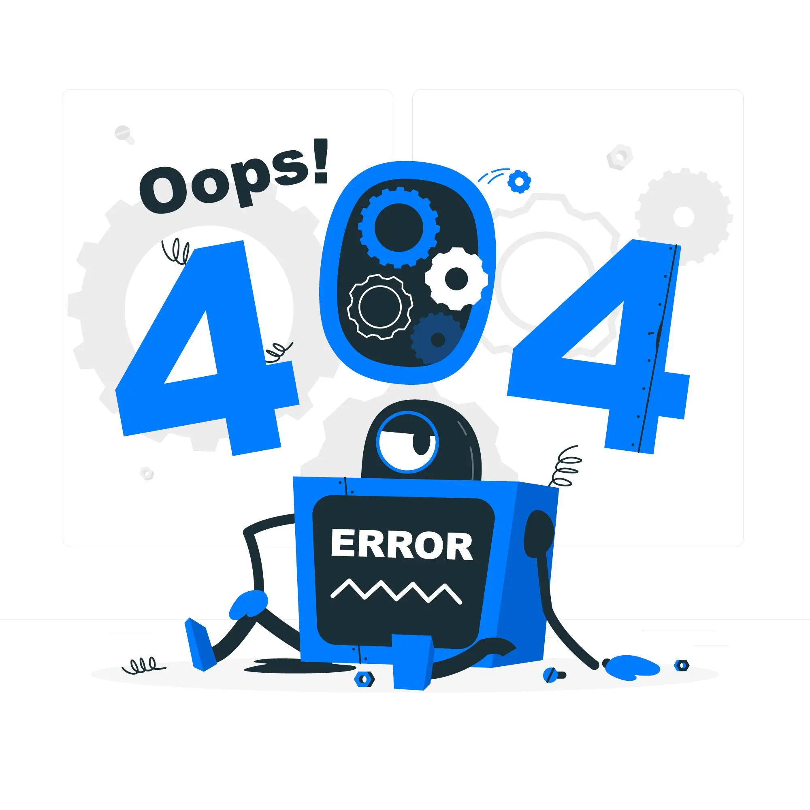

<section class="container">
  <div class="d-flex flex-column justify-content-center align-items-center gap-2 global-center">
    <h1>404 Page Not Found</h1>
    
    <p class="m-0">We are sorry for the inconvenience, please go back to main page.</p>
    <a class="general-action-btn" mat-raised-button color="primary" routerLink="/">GO BACK HOME</a>
    <p class="m-0 fw-bold">You will be redirected to main page in <span class="countdown-second"> {{countdown | async}} </span> seconds</p>
  </div>
</section>
